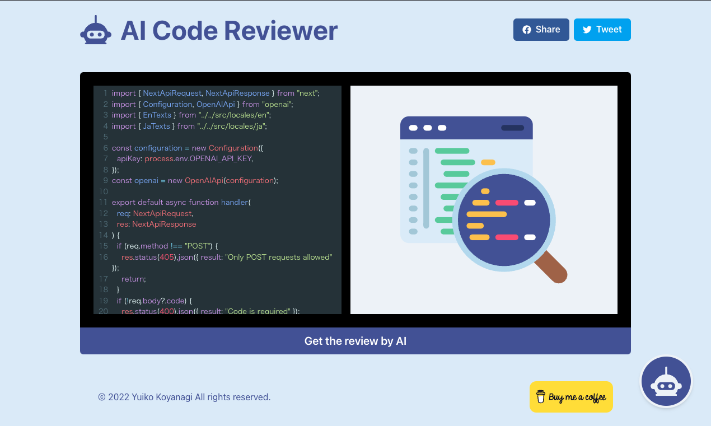

Projects
Projects

AI Code Review System
Tech Stack: Python, LangChain, FastAPI
Engineered an automated code review system with 90% accuracy in bug detection. Integrated with GitHub and GitLab, serving 5,000+ active users. Reduced code review time by 60% through AI-powered automation.Healthcare AI Assistant
Technologies: Python, PyTorch, AWS
Developed a multi-modal AI system that assists in medical diagnosis with 95% accuracy. The system processes and analyzes HIPAA-compliant patient records while ensuring secure data handling. Diagnosis Assistance: AI-powered predictions for accurate medical diagnosis. Secure Data Processing: Handled 10,000+ patient records with audit logging and encryption. Scalable Architecture: Deployed on AWS for high availability and security.Smart Retail Analytics
Technologies: TensorFlow, OpenCV, AWS
Built a real-time inventory management system that uses AI and computer vision to monitor stock levels with 98% accuracy. The solution reduced stockout incidents and improved supply chain efficiency. Real-Time Inventory Tracking: AI-powered detection of stock levels. Predictive Analytics: Reduced stockout incidents by 75%. Scalable Deployment: Deployed in 50+ retail locations using edge computing.